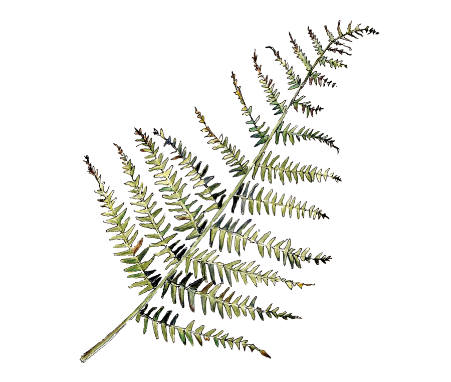
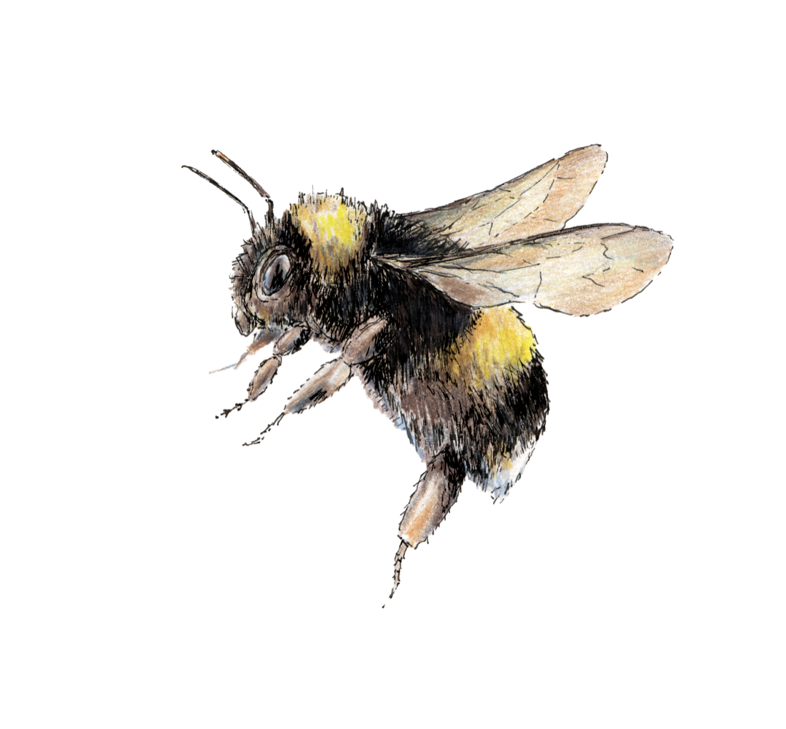
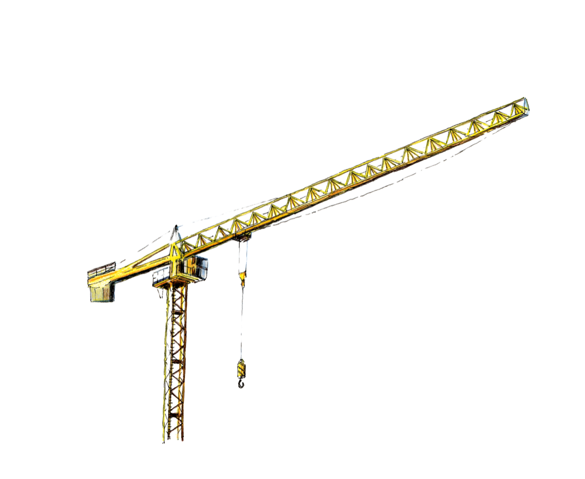
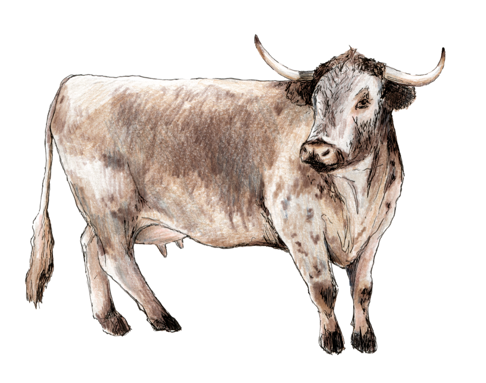

We’re in the business of nature.
Nature is changing. Development is changing. The way we care for land is changing too.
Every biodiversity unit starts with a Biofarm habitat.
At Biofarm, we’re creating a future where development, land and nature work better together.
Working with developers and landowners across England, we create habitats that support residential developments, commercial schemes and infrastructure projects, while restoring biodiversity and creating places where nature can thrive.
Creating better places together.
The best places don’t happen by chance. They happen when people work together with nature.
From new homes and workplaces to the infrastructure that connects our communities, development shapes the places where we live and work.
Landowners shape the landscapes that surround them.
At Biofarm, we bring those ambitions together by creating habitats that support responsible development, strengthen biodiversity and leave a lasting legacy for future generations.
Because better places benefit everyone.


You build. We restore.
Whether you’re delivering a development or exploring the future of your land, we’re here to help.
For Developers
Deliver Biodiversity Net Gain with confidence.
From early planning advice through to securing off site biodiversity units from our own habitat banks, we’ll help you find the right habitat, in the right place.
For Landowners
Unlock the potential of your land.
Partner with Biofarm to create habitats that support nature, generate long term value and leave a lasting legacy.
How Biofarm works.
Every biodiversity unit starts with a real place. Every project begins with a partnership.
- 01
We find the land.
Working alongside landowners, we identify places with the potential to become something more.
- 02
We create habitats.
Our ecologists restore wetlands, woodlands, species rich grasslands and other priority habitats that generate measurable biodiversity gains.
- 03
We support development.
Those habitats generate biodiversity units that help developers deliver Biodiversity Net Gain while creating lasting benefits for nature.
- 04
We look after what we create.
Every Biofarm habitat is managed, monitored and reported on for at least 30 years because lasting biodiversity depends on lasting stewardship.
This is not simply about meeting planning requirements.
It’s about creating places where wildlife can recover, landscapes can flourish and future generations can experience more nature, not less.
Working alongside developers, landowners and local communities, we’re restoring habitats that deliver lasting value for people and nature alike.
It’s why we do what we do.
Explore
Whether you’re looking for practical guidance or planning your next project, we’re here to help.
Biodiversity Net Gain
Understand how Biodiversity Net Gain works and what it means for your development.
Learn moreBiodiversity Units
Learn how Biofarm creates off site biodiversity units through our own habitat banks.
Learn moreBiodiversity Metric
Understand how Biodiversity Net Gain is measured and what it means for your project.
Learn moreHabitat Banks
Explore our growing network of Biofarm Habitat Banks across England.
Explore Habitat Banks
National by nature. Local by design.
Nature is local. That’s why every Biofarm Habitat Bank is created with place in mind.
By restoring habitats close to the developments they support, we’re helping developers reduce planning risk, minimise the impact of the Spatial Risk Multiplier and create meaningful biodiversity where it matters most.
As our network grows, so does the opportunity to create better outcomes for development, nature and local communities.
Trusted by developers. Valued by landowners.

Retain the existing client logo strip
What our clients say.
“[Existing developer testimonial — retain from the live page]”
Developer
“[Existing landowner testimonial — retain from the live page]”
Landowner
Meet the team behind Biofarm.
Behind every habitat is a team of ecologists, land specialists and project managers committed to creating better places for people and nature.
Let’s create something that lasts.
Whether you’re planning a residential development, commercial scheme, infrastructure project or exploring the future of your land, we’d love to hear about your plans.
Together, we can create habitats that unlock opportunity, strengthen landscapes and leave a lasting legacy for nature.